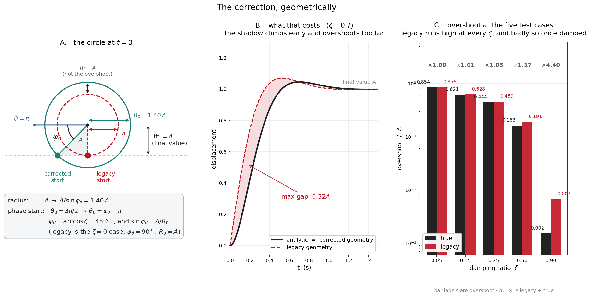
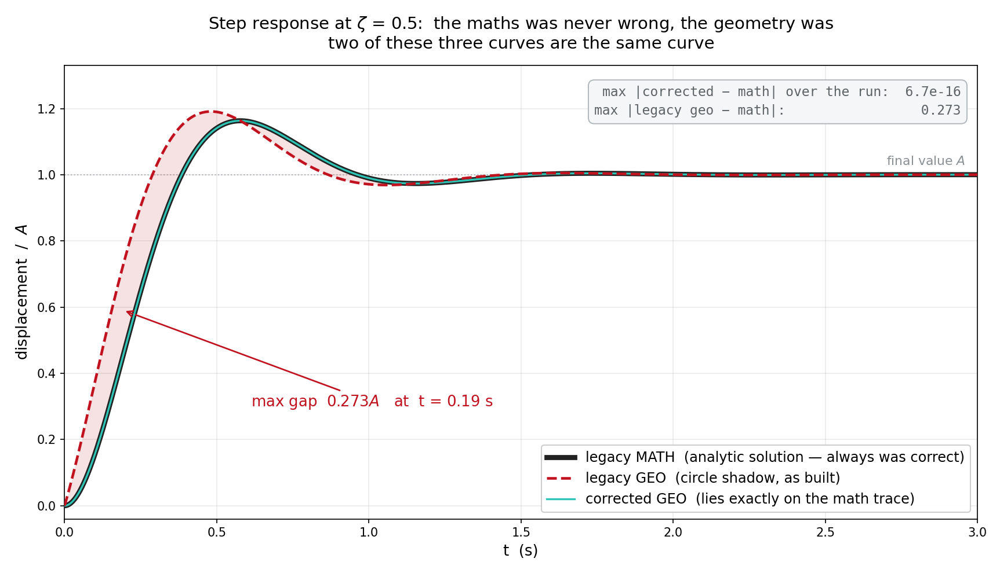
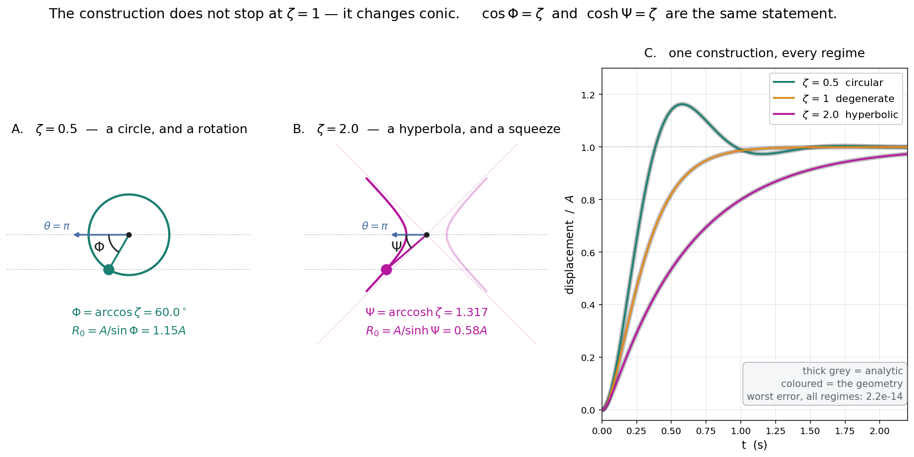

Simple harmonic motion is the shadow of a point moving on a circle. How much of the rest of oscillation is the shadow of something too?
The construction
Every mechanics course draws the same picture once: a point travels around a circle at constant speed, and its height traces a sine wave. The circle is a reference, a bookkeeping device, and then it is put away and the algebra takes over.
I did not want to put it away. If the undamped oscillator is a point on a circle, then the damped oscillator should be a point on a circle whose radius decays exponentially — the amplitude is the radius, so let the radius die the way the amplitude dies. That is the canonical picture, and it is where I started in 2024. The question I actually wanted answered was the next one: does the whole family come from deforming that circle? Not just the underdamped case — critically damped, overdamped, driven. One picture, every regime.
Shifting the circle
The second piece is the one I was most pleased with, and it is what turns a picture into a description. A free oscillation swings about zero. A step response — a system sitting at rest when its equilibrium suddenly moves — rises from zero, overshoots, and settles somewhere new. Those look like two different phenomena, and textbooks give them two different formulas.
They are the same circle. Lift the centre by the radius, start the point from a different place on the rim, and the same rotating shadow that drew the free oscillation now draws the step response. The centre of the circle is where equilibrium sits. The radius is the amplitude. The angle is the phase. And the starting angle — the thing that decides which of the two responses you get — is set by the damping phase angle.
So the parameter I had been calling a symmetry switch was never that. It is the initial condition, expressed geometrically. Free response and step response are two settings of one dial, and everything in between is a legitimate blend, because the system is linear. That is the mapping I was after: not an analogy to the mathematics, but a purely geometric statement that is the mathematics, with every algebraic constant standing for something you can point at in a drawing.
The catalogue, and the wall
I wrote the family out — four damping regimes, each in a free and a step form, with the switch that moved between them — and built the animations to match. Below about ζ = 0.25 for the step response and ζ = 0.5 for the free one, the geometry and the mathematics sat on top of each other. Above that they drifted apart, and the harder I damped the worse it got.
I could not find it. The animation was visibly right in the regime I could check by eye and visibly wrong outside it, which is the least useful kind of wrong. I set a standing goal in the notebook — fine-tune the exponential decay of the circle for large zeta — and eventually put the project down. It sat for two years.
What was actually wrong
The mathematics was never wrong. The closed-form solutions in the notebooks match the textbook forms to the last decimal place a double can hold, and they satisfy the differential equation directly. The error was entirely in the geometry — and it came down to two constants, both of them the same quantity.
The circle was too small. Its radius has to be A / sin Φ, not A. The lift is the final value; the radius is strictly larger; and the gap between them is exactly why a step response overshoots at all.
The point started in the wrong place. Not a quarter turn down, but Φ round from it, where Φ = arccos ζ. Both constants are the damping phase angle, and the punchline is that the code already computed it — it was sitting in every notebook, used by the equations and never handed to the circle. The two halves of the same file disagreed by exactly the quantity they both knew.

There is a reason two years of tuning never found it: the errors partially cancel. Correcting the radius on its own makes the fit measurably worse — more than three times worse at heavy damping — and so does correcting the starting angle on its own. Only moving both together lands. Any session of turning one knob at a time reports that you are going backwards, no matter which knob you turn.
Worse, the parameter I had written down as the thing to fix was the one parameter that was already correct. The decay rate was right — but only because the natural frequency was hardcoded to 2π in every notebook, which quietly made two separate errors invisible at once.
The result
With both constants in place the geometry does not approximate the solution. It reproduces it, to the limit of double precision — a residual of about 10−15, which is arithmetic noise, not agreement. The circle picture is not a teaching analogy for the damped oscillator. It is the solution, written in polar coordinates.

Everything above is the project as I conceived and pursued it: the decaying-radius circle, the shifted centre, the catalogue, and the wall I hit. What follows goes past where I had taken it. The completion below — carrying the construction through ζ = 1 and into the overdamped regime, and collapsing the catalogue into a single expression — was worked out in 2026 in collaboration with an AI assistant, and I am flagging it as such rather than folding it into the original thread.
Past the wall: the construction changes conic
My assumption had always been that the circle picture simply ends at critical damping. Above ζ = 1 the roots go real, there is no rotation left to project, and sin Φ collapses to zero. That reads like a hard boundary, and I treated it as one.
It is not a boundary. It is a change of curve. Above critical damping the point rides a hyperbola instead of a circle, and the motion is a hyperbolic rotation — a squeeze — instead of an ordinary one. The formula does not change shape at all; the circular functions become hyperbolic ones:
ζ > 1 → Ψ = arccosh ζ radius = A / sinh Ψ cos Φ = ζ and cosh Ψ = ζ are the same statement. Critical damping is the seam where the two conics meet and the construction degenerates.

Sweeping the damping ratio through the seam shows it directly. As damping rises toward critical, the point slides around to the extreme edge of the circle and the angle closes toward zero; past critical, it re-emerges at the vertex of a hyperbola, at the same height, with the curve through it now bending the other way. The response alongside goes from ringing to sluggish without a discontinuity, and the agreement with the analytic solution never moves off the noise floor — including at the seam itself.
Reconciling the catalogue
Which finally answers the question the 2024 catalogue was really asking. Four damping regimes, two symmetry states, eight separate closed forms with a switch bolted across them — all of it collapses into one line:
Every symbol in it is something you can point at on the drawing. A(1−λ) is where the centre sits. A/S(Φ) is the radius. Φ is the starting angle. ω₀S(Φ) is the rate the angle advances. The exponential is the radius decaying. There is nothing left over.
Checked row by row against the original catalogue, it reproduces every step-response form exactly, in every regime. It also surfaced something I had not noticed about my own notes: the switch was only ever wired for half the table. In the undamped and underdamped rows λ sits inside the phase, where it correctly selects between the two responses. In the critically damped and overdamped rows I had written it as a multiplier, (1 − λ), which does not switch to the free response — it multiplies the entire solution by zero. Those two cells of the catalogue never had a free-response form at all. The single statement supplies them.
What this is, and what it isn't
Nothing here is a new theorem. A complex exponential is a rotating vector of changing length; the phasor representation is standard, the second-order solutions are in every textbook, and the circular-to-hyperbolic correspondence is the ordinary behaviour of these functions either side of a repeated root. If you already think in complex exponentials, none of this will surprise you.
What it is, is an exact construction rather than an approximate picture — and that distinction is the whole point for teaching. The reference circle is normally shown once for the undamped case and then abandoned, precisely because it seems not to survive damping. It survives all of it. Overshoot stops being a formula and becomes a visible fact about a circle being larger than the distance it has to cover. Critical damping stops being a special case to memorise and becomes the moment a curve degenerates on its way to becoming a different one.
Two things remain genuinely outside the construction as it stands. Sinusoidal driving needs a second curve, turning at the drive frequency alongside the transient's own — one circle cannot hold both. And a continuously blended initial condition is not a linear interpolation of the geometry: two phasors of differing phase add as vectors, so the resultant radius and angle both have to be recomputed rather than slid between. Both were left where they are.
Related Work
The same second-order system as a physical rig — a validated digital twin, three control modes, and the finding that timing beat thrust.
A mathematical treatment of nonlinear dynamics, stability, and phase-space methods across physical domains.